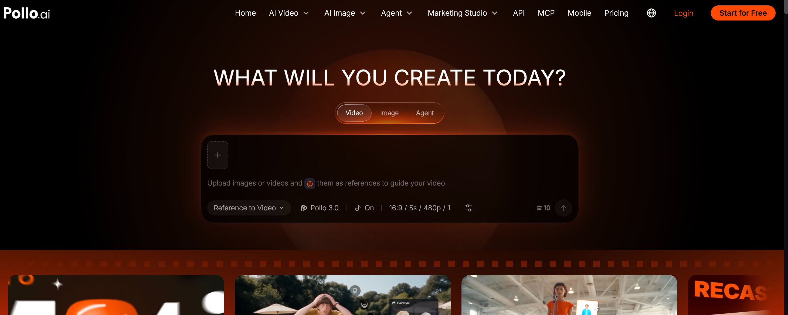
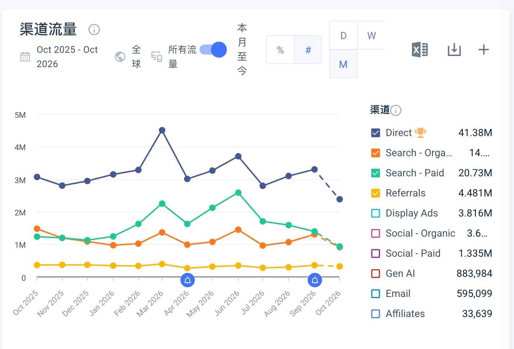
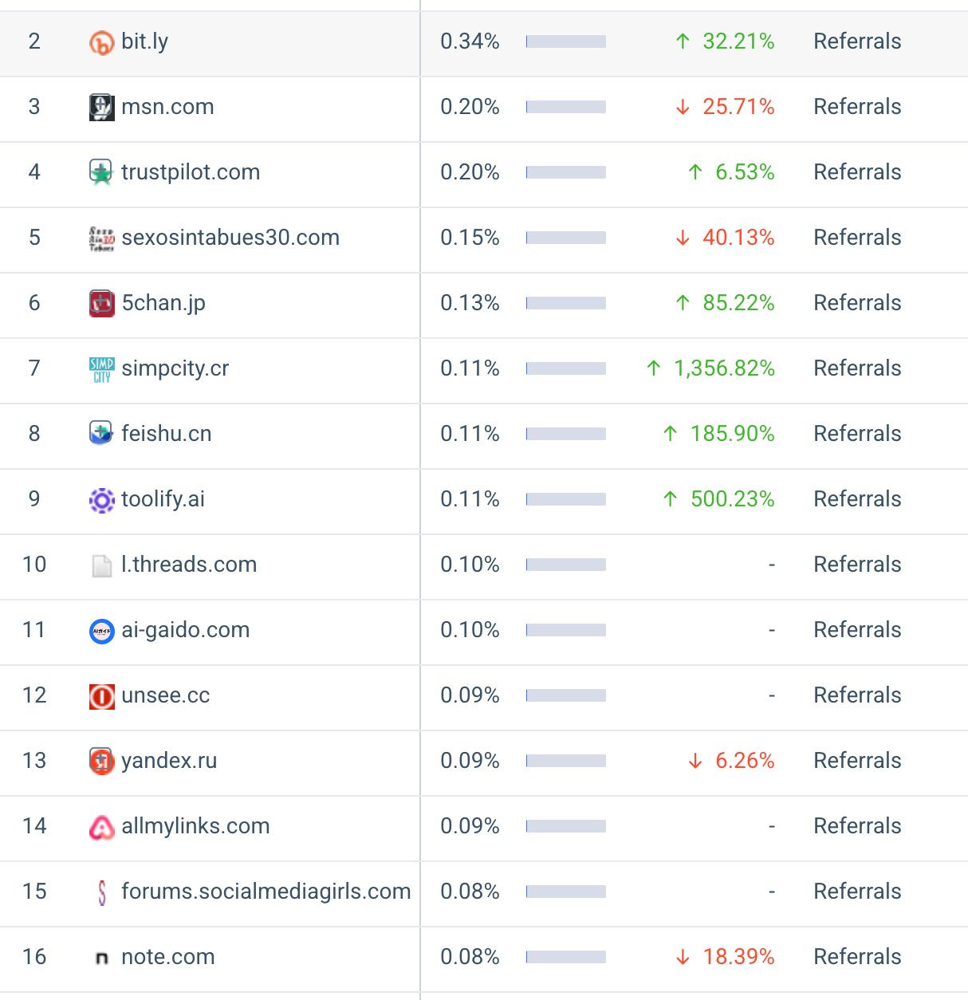
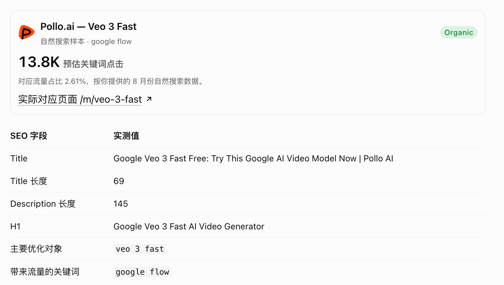
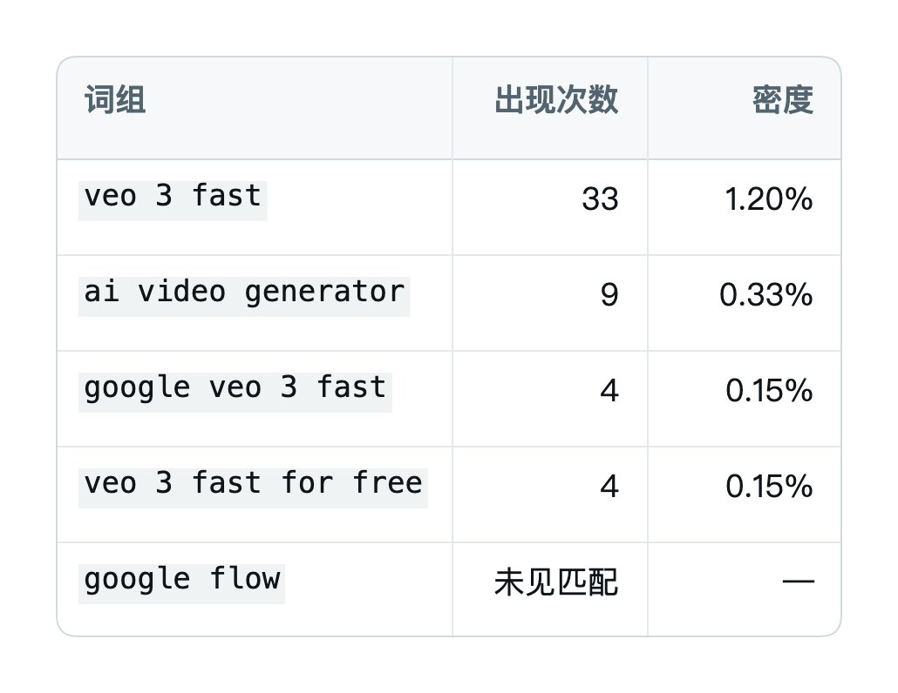
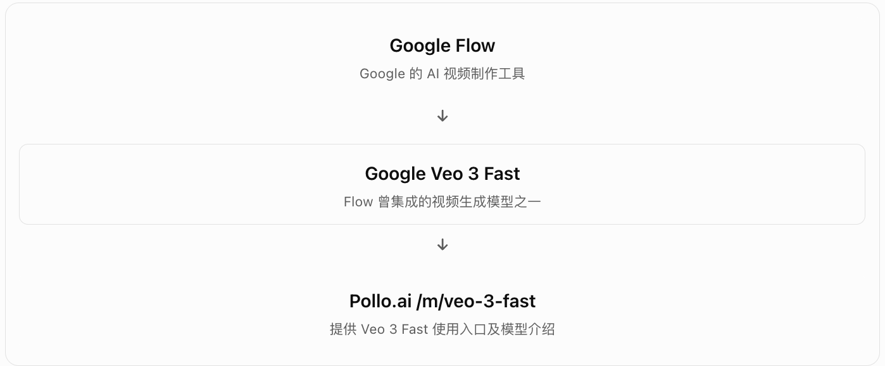
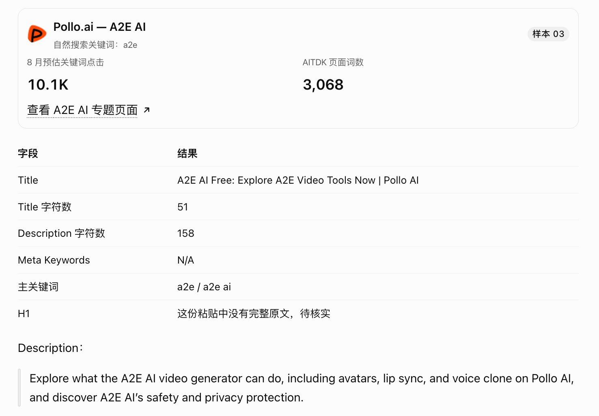
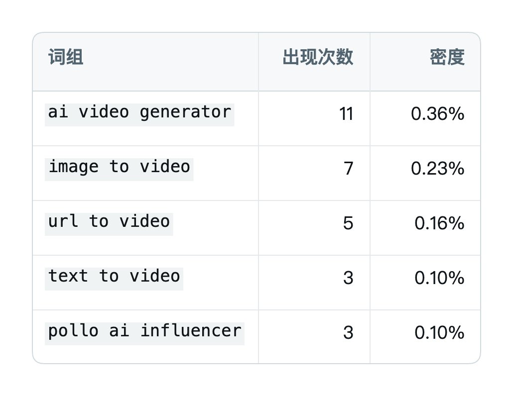
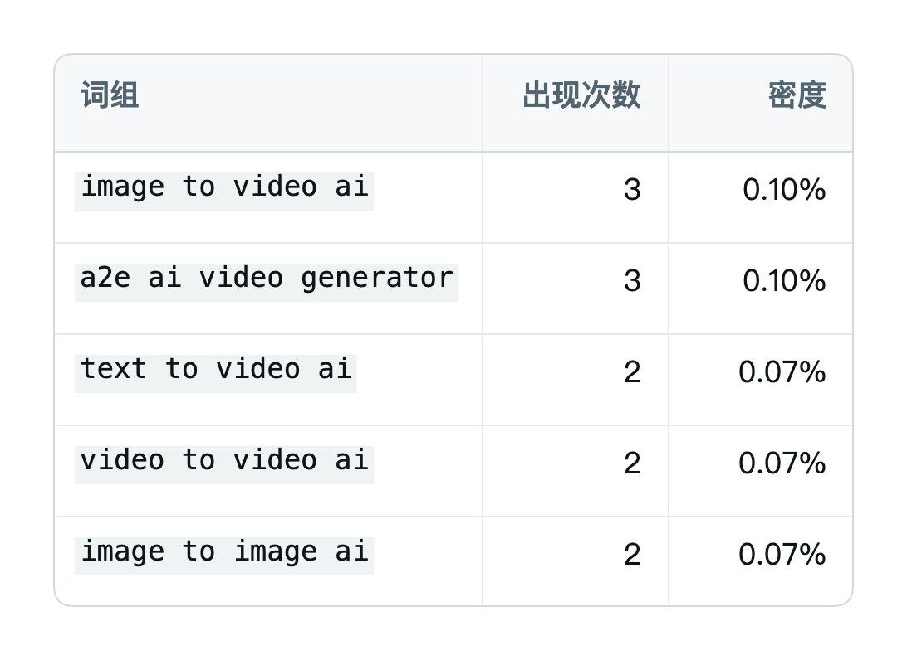

2026 年 10 月 28—29 日 · Pollo AI 拆站记录
这次日课照着哥飞给运营同事的新手入门学习任务，从 Pollo.ai 开始看。10 月 28 日先看流量和渠道，29 日继续顺着关键词拆页面。
新手拆站任务：流量 → 关键词 → 页面 → SERP → 新站
这套学习任务的顺序很具体：
- 看网站流量。 用 Similarweb 打开 Pollo.ai，记录 8 月的总访问量、直接访问量和自然搜索访问量。
- 看非品牌关键词。 记录每个关键词在 8 月带来的流量，以及它对应的页面。
- 逐页拆 On Page。 用 AITDK 查看 Title、Description、页面单词数量、H1，以及一词组到四词组中各自排名前五的高频词。
- 回到 Google 看 SERP。 记录第一页搜索结果，排除 apps.apple.com、youtube.com、reddit.com、play.google.com 等网站。
- 顺着新网站继续看。 搜索结果里出现了新网站，就回到第一步，看它的流量、关键词和页面。
网站、网页、关键词，在这三者之间不断循环往复地看，边看边记录。原任务同时要求用飞书表格记录数据，再开一份文档写心得。
不要机械地复制粘贴，不要为了完成任务而做，最重要的是用心去看，看完了再记录。
配套的三篇学习资料也分别对应三个问题：
- Brian Dean：谷歌排名关键因素——哪些因素会影响排名。
- Ahrefs：On Page SEO 教程——基于这些因素，页面上的 SEO 怎么做。
- Ahrefs：SEO 入门基础教程中文版——如何入门学习 SEO。
自然搜索相对平稳，总量起伏更受投流影响
先看 Pollo.ai 的总访问量。图上的窗口是 2025 年 10 月到 2026 年 9 月，全球、所有流量。
说实话，这个曲线非常让人揪心啊，起起落落、起起落落。我要负责这个站的 SEO，我得疯。
但把渠道拆开，单看自然搜索就好多了。
这一张渠道图还包含了 2026 年 10 月的当月数据，末尾是虚线。自然搜索的橙线相对平稳，付费搜索的绿线起伏更明显。这样看，总量的起起落落更大是受到投流的影响。

引荐渠道每月也带来三四十万访问
再点开引荐渠道。这些是能直接带来流量的外链，组合在一起，给这个站每个月也带来三四十万的流量。

主打 Veo 3 Fast 的页面，也拿到了 Google Flow 流量
继续看自然搜索关键词。
Pollo AI 确实玩得非常野，它的整个自然流量词几乎全是竞品品牌词，直接玩截流。这显然对 SEO 有非常高的要求，很值得学习。
我们先看 google flow。
这次看的 8 月自然搜索数据里，这个词有 13.8K 预估关键词点击，对应流量占比 2.61%。但它承接的不是一个 Google Flow 专题页，而是 Veo 3 Fast 页面。

这个页面的 Title 是：
Google Veo 3 Fast Free: Try This Google AI Video Model Now | Pollo AI
H1 是：
Google Veo 3 Fast AI Video Generator
Title 长度是 69，Description 长度是 145。Title、Description、H1 全都围绕 Veo 3 Fast。
再把高频词排在一起看：

veo 3 fast 出现 33 次，是非常明确的主题词。Google Flow 没有出现在这份高频词列表里；这次对页面可提取正文的检查中，也没有找到 Flow 这个完整词。
也就是说，这个页面的核心优化对象是 Veo 3 Fast，而不是 Google Flow。
所以肯定要问下：为什么优化 Veo 3 Fast，却能拿到 Google Flow 的流量？
把产品关系放在一起看，就有了一个很自然的联系。Flow 是 Google 的 AI 视频制作工具，基于 Veo 等模型构建；Google 也明确提到了 Flow 中的 Veo 3 Fast 功能。

搜索 Google Flow 的用户，可能也对使用 Google Veo 模型生成视频感兴趣。
这提供了一个合理解释：即使网页没有直接优化 google flow，仍可能通过产品、功能和搜索意图的关联，获得这个词的部分排名与点击。
Pollo 与 A2E 互做品牌专题页，争夺彼此的搜索流量
Google Flow 这个页面没那么直接，我们看下一个词：a2e。
它承接的页面是 /m/a2e-ai。8 月的预估关键词点击是 10.1K，AITDK 显示页面有 3,068 个词。

Title 是：
A2E AI Free: Explore A2E Video Tools Now | Pollo AI
Title 字符数 51，Description 字符数 158。Description 直接写的是：
Explore what the A2E AI video generator can do, including avatars, lip sync, and voice clone on Pollo AI, and discover A2E AI’s safety and privacy protection.
再拆关键词密度，重要的词很集中。
三词组：视频生成和图转视频出现最多

四词组：A2E 品牌词与图像、视频生成词同时出现

这些基本都是 AI 领域的大词、热词，最大的赚钱词了。
还有一个很有意思的事情：A2E 也在反过来截流 Pollo ai。它也建了一个 Pollo AI 专题页，强调自己拥有 Pollo 不具备的功能和优势。